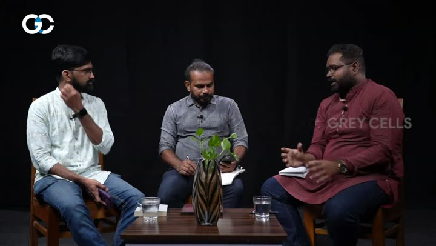
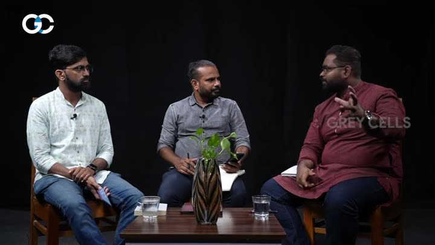
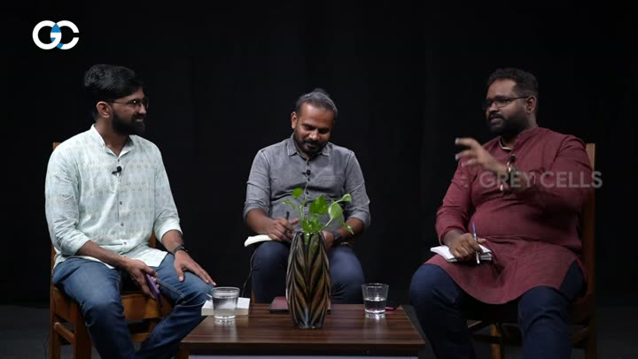
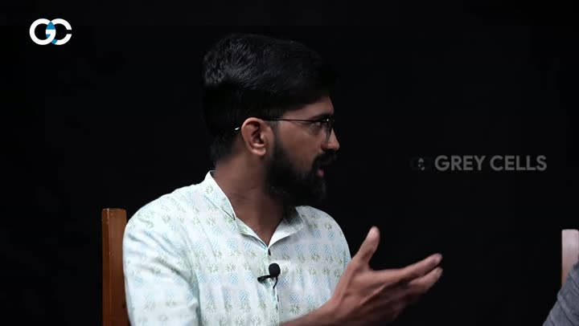
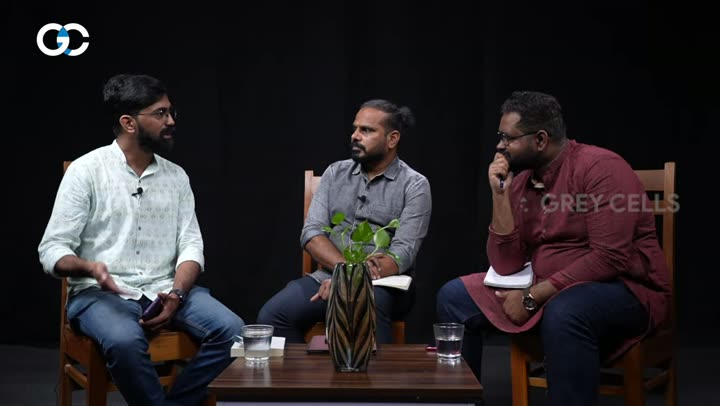

![Kaipps Cafe]()
Authored by Kaipp's AI Repo© 2026 Nishad Kaippally (Kaipps Cafe). All rights reserved.
This report was built with several private and public AI models. It is educational material: not for sale, and not to be reused or republished, including on any YouTube channel, without explicit permission.
Ashish John vs Vaisakhan Thampi: Intelligent Design debate-ന്റെ വിശകലനം
പ്രപഞ്ചം ബുദ്ധിപരമായ രൂപകല്പനയാണോ? Fine-tuning (സൂക്ഷ്മ ക്രമീകരണം), firing squad, നനഞ്ഞ ഗാർഡൻ, Mars-ലെ സന്ദേശം: ഓരോ വാദവും എവിടെ നിൽക്കുന്നു

Ashish (apologist, physics teacher) ആണ് designer-ന് വേണ്ടി വാദിച്ചത്. Fine-tuning, Hoyle, Penrose, Davies എന്നിവരെ ഉദ്ധരിക്കൽ, firing squad, lottery, ഗാർഡൻ ഉദാഹരണങ്ങൾ, 'information-ന് പിന്നിൽ intelligence വേണം' എന്ന വാദം: ഇതൊക്കെയായിരുന്നു ആയുധങ്ങൾ.
Dr. Vaisakhan Thampi പറഞ്ഞത്: designer എന്ന ആശയത്തിന് പിന്നിൽ agency detection (ഏജന്റിനെ കണ്ടെത്താനുള്ള പ്രവണത) ആണ്. പ്രപഞ്ചം നമുക്ക് ആകെ ഒരു data point ആണ്. Creator എന്ന ഉത്തരം കൂടുതൽ ചോദ്യങ്ങൾ ഉണ്ടാക്കുന്നു. തെളിവ് വരുംവരെ 'we don't know' (നമുക്കറിയില്ല) ആണ് സത്യസന്ധമായ നിലപാട്.
ജയിച്ചത് Vaisakhan ആണ്. Ashish ആദ്യം 'സയന്റിഫിക്കായി deduce ചെയ്യാം' എന്ന് പറഞ്ഞു. പിന്നെ 'more probable' (കൂടുതൽ സാധ്യത) എന്നാക്കി താഴ്ത്തി. Designer-നെ test ചെയ്യാൻ പറ്റില്ലെന്ന് സമ്മതിച്ചു. അവസാനം വീണ്ടും 'designer ഉണ്ടെങ്കിൽ മാത്രമേ ഇത് പോസിബിൾ ആകൂ' എന്ന് പറഞ്ഞു.
Vaisakhan-നും പിഴവുകളുണ്ട്. 'രണ്ടുപേരുടെയും കയ്യിലുള്ള തെളിവ് സെയിം ആണ്' എന്ന വാചകം burden of proof (തെളിവിന്റെ ബാധ്യത) വിട്ടുകൊടുക്കുന്നു. DNA information വാദത്തിന് natural selection (പ്രകൃതി നിർദ്ധാരണം) കൊണ്ട് മറുപടി പറഞ്ഞില്ല.
ആദ്യം ഒരു കുറിപ്പ്: ആരാണ് സംസാരിക്കുന്നത്
Record-ൽ 'Speaker 1', 'Speaker 2', 'Dr. Vaisakhan Thampi' എന്നീ പേരുകൾ പലയിടത്തും മാറിപ്പോയിട്ടുണ്ട്. ഉദാഹരണത്തിന് 00:16:00 മുതലുള്ള Hoyle ഭാഗവും 00:37:00-ലെ ഗാർഡൻ ഭാഗവും Vaisakhan-ന്റെ പേരിലാണ്. പക്ഷേ ഉള്ളടക്കം Ashish-ന്റേതാണ്. അതുകൊണ്ട് ഈ report-ൽ ഓരോ വാദവും പറഞ്ഞയാളെ ഉള്ളടക്കം നോക്കിയാണ് കണ്ടെത്തിയത്.
Host channel നിഷ്പക്ഷമല്ല
Mid-roll-ൽ host തന്നെ പറയുന്നു: 'നിരീശ്വരവാദി ചിന്താധാരയെ ആശയപരമായി ഖണ്ഡിക്കാൻ' നിലകൊള്ളുന്ന channel ആണിത്. അവസാനം
01:43:20-ൽ 'കർത്താവായ യേശുവിന്റെ നാമത്തിൽ' പ്രാർത്ഥനയോടെയാണ് പരിപാടി തീരുന്നത്. അതായത് ഇത് ഒരു apologetics വേദിയിലെ എവേ മാച്ച് ആയിരുന്നു. അങ്ങനെ നോക്കുമ്പോൾ Vaisakhan-ന്റെ പ്രകടനം കൂടുതൽ ശ്രദ്ധേയമാണ്.
Ashish-ന്റെ പ്രധാന വാദങ്ങളും അവ പൊളിയുന്ന വിധവും
ഓരോന്നിനും ആദ്യം ഏറ്റവും ശക്തമായ രൂപം ഒരു വരിയിൽ. പിന്നെ എന്തുകൊണ്ട് അത് ദൈവത്തിൽ എത്തുന്നില്ല എന്ന്.
'സയന്റിഫിക്കായി deduce ചെയ്യാം' എന്നതിൽ നിന്ന് 'more probable' എന്നതിലേക്ക്

00:09:47-ൽ Ashish പറഞ്ഞു: 'ഒരു ഇന്റലിജൻസ് അതിന്റെ പുറകിൽ ഉണ്ട് എന്ന് സയന്റിഫിക്കലി തന്നെ നമുക്ക് deduce ചെയ്യാൻ പറ്റും.'
00:42:51 ആയപ്പോൾ അത് 'I would rather reframe... this universe is more probable under theism' എന്നായി.
01:02:33-ൽ 'prove ചെയ്യാമെന്ന് ഞാൻ പറയുന്നില്ല' എന്നും പറഞ്ഞു. ഒരു debate-ൽ തന്നെ claim മൂന്ന് തവണ മാറി. ഉറപ്പുള്ള ഒരു തെളിവ് ഇങ്ങനെ ചുരുങ്ങിപ്പോകില്ല.
Fine-tuning: 'ജീവനില്ലാത്ത പ്രപഞ്ചമാണ് കൂടുതൽ എളുപ്പം'
Steelman (ഏറ്റവും ശക്തമായ രൂപം): constants അല്പം മാറിയാൽ ജീവൻ ഉണ്ടാകില്ല, അതുകൊണ്ട് നമ്മുടെ പ്രപഞ്ചം അത്യപൂർവമാണ്. പക്ഷേ ഈ 'probability' കണക്കാക്കണമെങ്കിൽ constants ഏത് probability distribution-ൽ നിന്ന് വരുന്നു എന്നറിയണം. അത് ആർക്കും അറിയില്ല. ഇതാണ് philosophy of physics-ൽ പറയുന്ന normalizability problem. 'Atheistic picture-ൽ ജീവൻ ഉണ്ടാകരുത്' എന്ന വാചകം ഒരു കണക്കുകൂട്ടലല്ല, വെറുമൊരു അവകാശവാദമാണ്. Atheism constants-നെക്കുറിച്ച് ഒന്നും പ്രവചിക്കുന്നില്ല.
Penrose, Hoyle, Davies: ഉദ്ധരണികളുടെ ബലം
'വിശ്വാസികളല്ലാത്തവർ പോലും പറയുന്നു' എന്നതാണ് ഇവിടെ തന്ത്രം. ഉദ്ധരിച്ച ആരും designer-ൽ എത്തിയിട്ടില്ല. Hoyle ദൈവവിശ്വാസിയായില്ല, Ashish തന്നെ അത് സമ്മതിക്കുന്നു. Penrose-ന്റെ 10^10^123 എന്ന സംഖ്യ ആദ്യ പ്രപഞ്ചത്തിലെ low entropy-യെക്കുറിച്ചാണ്. അതിന് അദ്ദേഹം തേടുന്നത് ഒരു ഭൗതിക വിശദീകരണമാണ്, ദൈവത്തെയല്ല. Hoyle-ന്റെ carbon resonance പ്രവചനം തന്നെ അന്ന് anthropic reasoning ആയിരുന്നില്ലെന്ന് ചരിത്രകാരൻ Helge Kragh (2010) വാദിച്ചിട്ടുണ്ട്. അത്ഭുതം പ്രകടിപ്പിക്കുന്ന ഒരു വാചകം തെളിവാകില്ല.
Firing squad, lottery: 'ആരോ ചതിക്കുന്നുണ്ട്'
Steelman: അഞ്ച് ദിവസം തുടർച്ചയായി lottery അടിച്ചാൽ ചതിയാണെന്ന് സംശയിക്കുന്നത് ന്യായമാണ്. പക്ഷേ ആ സംശയം ന്യായമാകുന്നത് ചതിക്കുന്ന മനുഷ്യർ ഉണ്ടെന്നും അവർക്ക് കാരണങ്ങളും മാർഗങ്ങളും ഉണ്ടെന്നും നമുക്ക് മുൻകൂട്ടി അറിയാവുന്നതുകൊണ്ടാണ്. പ്രപഞ്ചത്തിന് പുറത്തുള്ള ഒരു 'ചതിയനെ' നമ്മൾ ഒരിക്കലും കണ്ടിട്ടില്ല. ഈ analogy തെളിയിക്കേണ്ട കാര്യം തന്നെ premise-ൽ ഒളിപ്പിച്ചുവെക്കുന്നു.
00:48:53-ൽ Vaisakhan ഇതിൽ കൃത്യമായി പിടിച്ചു: 'These are all really physical things.'
നനഞ്ഞ ഗാർഡനും ബക്കറ്റും

'ആര്, എന്തിന് എന്നറിയില്ലെങ്കിലും ആരോ വെള്ളം തളിച്ചു എന്നതാണ് ഏറ്റവും simple ആയ വിശദീകരണം' എന്നാണ് Ashish-ന്റെ വാദം. പക്ഷേ ഈ നിഗമനം ശരിയാകുന്നത് ബക്കറ്റ് ഉപയോഗിക്കുന്ന മനുഷ്യർ ഉണ്ടെന്ന് നമുക്ക് നേരത്തെ അറിയാവുന്നതുകൊണ്ടാണ്. പ്രപഞ്ചത്തിന് പുറത്ത് 'ബക്കറ്റ്' ഇല്ല, 'മനുഷ്യരും' ഇല്ല.
01:38:07-ൽ Vaisakhan ഈ implicit assumption (ഒളിഞ്ഞിരിക്കുന്ന അനുമാനം) തുറന്നുകാട്ടി: 'that should be a real person... ഗന്ധർവൻ വന്ന് ചെയ്തു എന്ന് നമ്മൾ പറയില്ല.'
'Designer ആണ് ഏറ്റവും simple ആയ hypothesis'
Fine-tune ചെയ്യാൻ കഴിവുള്ള, പ്രപഞ്ചത്തിന് പുറത്തുള്ള, എല്ലാം അറിയുന്ന ഒരു മനസ്സ് പ്രപഞ്ചത്തേക്കാൾ സങ്കീർണമായ ഒന്നാണ്. Occam's razor (ഓക്കാമിന്റെ കത്തി) അതിനെ ആദ്യം വെട്ടിക്കളയും. 'Simple' എന്ന വാക്ക് ഇവിടെ 'എനിക്ക് പരിചിതം' എന്ന അർത്ഥത്തിലാണ് ഉപയോഗിക്കുന്നത്. Parameters കുറവ് എന്ന അർത്ഥത്തിലല്ല.
01:27:15-ൽ Vaisakhan simplicity-യുടെ ശരിയായ നിർവചനം തന്നെ പറഞ്ഞു: parameters-ന്റെ എണ്ണം.
'Intelligent effect-ന് intelligent cause വേണം'
ബുദ്ധിയുള്ളതിനെ ബുദ്ധിയുള്ളതിനേ സൃഷ്ടിക്കാൻ കഴിയൂ എന്നത് തെളിയിക്കേണ്ട കാര്യമാണ്. അതിനെ premise ആയി എടുക്കുകയാണ് Ashish ചെയ്യുന്നത്. ബുദ്ധിയില്ലാത്ത പ്രക്രിയകളിൽ നിന്ന് ബുദ്ധി ഉണ്ടാകുന്നതിന്റെ ഏറ്റവും നന്നായി രേഖപ്പെടുത്തിയ ഉദാഹരണം evolution (പരിണാമം) ആണ്. Computer-ന് പിന്നിൽ intelligence ഉണ്ട്, കാരണം computer ഉണ്ടാക്കുന്നവരെ നമുക്കറിയാം. പ്രപഞ്ചത്തിന് അങ്ങനെയൊരു reference class ഇല്ല.
Mona Lisa, Da Vinci, 'category' വാദം
'Da Vinci-യെ ആര് വരച്ചു എന്ന ചോദ്യം illogical ആണ്, കാരണം അദ്ദേഹം painting അല്ല' എന്നാണ് വാദം.
00:55:54-ൽ Vaisakhan ഇതിന് കൃത്യമായി മറുപടി പറഞ്ഞു: Da Vinci painting അല്ലെന്ന് നമുക്കറിയാം. പക്ഷേ പ്രപഞ്ചത്തിന് പുറത്തുള്ള ഏജന്റിന്റെ category നമ്മൾ സ്വയം സങ്കൽപ്പിക്കുന്നതാണ്. 'We don't have evidences.' ഒരു വിഭാഗത്തിന് മാത്രം നിയമത്തിൽ നിന്ന് ഇളവ് കൊടുത്ത് അതിനെ ന്യായീകരിക്കാൻ category ഉണ്ടാക്കുന്നതാണ് special pleading.
Mars-ലെ 'Welcome to Mars Ashish'

എഴുതിവെച്ച ഒരു വാക്യം കണ്ടാൽ design ഉണ്ടെന്ന് നമ്മൾ ഉറപ്പിക്കും എന്നത് ശരിയാണ്. പക്ഷേ അത് ഭാഷ ഉപയോഗിക്കുന്ന മനുഷ്യരുടെ അനുഭവത്തിൽ നിന്നാണ്. ഇംഗ്ലീഷ് അക്ഷരങ്ങൾ മനുഷ്യർ ഉണ്ടാക്കിയ code ആണ്. DNA-യോ fine-tuning-ഓ 'Welcome' എന്ന് എഴുതിയിട്ടില്ല.
01:21:50-ൽ 'universe മാത്രമാണ് intelligence ഇല്ലാതെ ഉണ്ടായി എന്ന് നമ്മൾ assume ചെയ്യുന്നത്' എന്ന് Ashish പറയുന്നു. അത് burden തിരിച്ചിടലാണ്. ആരും 'intelligence ഇല്ലാതെ' എന്ന് assume ചെയ്യുന്നില്ല. Intelligence ഉണ്ടെന്ന് തെളിയിക്കാത്തിടത്തോളം അത് ചേർക്കുന്നില്ല, അത്രമാത്രം.
'Information randomness-ൽ നിന്ന് വരില്ല'
Ashish രണ്ട് സാധ്യതകളേ പറയുന്നുള്ളൂ: ഒന്നുകിൽ random, അല്ലെങ്കിൽ designer. Natural selection ഇതിൽ രണ്ടിലും പെടില്ല. Mutation random ആണ്, പക്ഷേ selection random അല്ല. Genome-ൽ പുതിയ information ഉണ്ടാകുന്നത് പരീക്ഷണങ്ങളിൽ നേരിട്ട് കണ്ടിട്ടുണ്ട്. Lenski-യുടെ E. coli long-term experiment-ൽ citrate ഉപയോഗിക്കാനുള്ള കഴിവ് പരിണമിച്ചുണ്ടായത് ഉദാഹരണം.
01:33:44-ലെ 'എത്തിസ്റ്റിക് യൂണിവേഴ്സിൽ കംപ്ലീറ്റ് റാൻഡംനെസ്സ് ആണ്' എന്ന വാചകം naturalism-ത്തിന്റെ strawman ആണ്.
HADD 'ശരിക്കും തീസത്തിനുള്ള വാദമാണ്'
Justin Barrett ക്രിസ്ത്യാനിയാണ് എന്നത് ശരിയാണ്. പക്ഷേ ഒരു സിദ്ധാന്തം ആര് പറഞ്ഞു എന്നത് അതിന്റെ തെളിവ് എന്ത് കാണിക്കുന്നു എന്നതിനെ മാറ്റില്ല. Agency detection ഇല്ലാത്തിടത്തും ഏജന്റിനെ 'കാണുന്നു' എന്നതാണ് പഠനങ്ങൾ കാണിക്കുന്നത്. 'ദൈവം ഉണ്ടെങ്കിൽ എല്ലാവർക്കും access ഉണ്ടാകണം' എന്നത് ഒരു theological premise ആണ്, തെളിവല്ല. പക്ഷേ Ashish തന്നെ
01:20:06-ൽ 'കൂടുതൽ നോളജ് ദൈവം നേരിട്ട് reveal ചെയ്യണം' എന്ന് പറയുന്നു. എല്ലാവർക്കും തുല്യ access എന്ന ആശയവുമായി ഇത് ചേരില്ല.
Vaisakhan-ന്റെ ഏറ്റവും ശക്തമായ പോയിന്റുകൾ
അടുത്ത debate-ലും ഇതേപടി ഉപയോഗിക്കാവുന്നവ.
Designer ഇല്ലെങ്കിൽ എങ്ങനെയിരിക്കുമോ, അങ്ങനെയാണ് പ്രപഞ്ചം

Opening statement-ൽ തന്നെ ശരിയായ test വെച്ചു. 'ഒരു ഡിസൈനർ ഇല്ലാതിരുന്നാൽ ഒരു പ്രപഞ്ചം എങ്ങനെ കിടക്കുമോ അങ്ങനെ കിടക്കുന്നതായിട്ടാണ് അത് കാണപ്പെടുന്നത്.' Designer hypothesis എന്തെങ്കിലും വ്യത്യസ്തമായി predict ചെയ്യുന്നുണ്ടോ എന്നതാണ് ചോദ്യം. അതിന് ഒരു ഉത്തരവും debate-ൽ വന്നില്ല.
Agency detection: കയർ കാണുമ്പോൾ പാമ്പ് എന്ന് തോന്നുന്നത്
Pattern seeking (പാറ്റേൺ കണ്ടെത്താനുള്ള പ്രവണത) നിലനിൽപ്പിന് സഹായിച്ച കഴിവാണ്. പക്ഷേ 'ആ സ്കിൽ നമ്മൾ പാറ്റേൺ ഇല്ലാത്തിടത്തും കണ്ടുപിടിക്കും.' ഡിസൈനർ ഉണ്ടെന്ന് തോന്നുന്നത് എന്തുകൊണ്ടാണ് എന്ന് ഇത് വിശദീകരിക്കുന്നു. ഡിസൈനർ ഇല്ലാതെ തന്നെ. False positive-ന് ചെലവ് കുറവാണ്, അതുകൊണ്ട് evolution അതിനെ നിലനിർത്തി.
ചോദ്യം ചോദിക്കാൻ ആരെങ്കിലും വേണം
Weak anthropic principle-ഉം multiverse സാധ്യതയും കൃത്യമായി പറഞ്ഞു. ജീവനില്ലാത്ത പ്രപഞ്ചങ്ങളിൽ 'ആരും ക്വസ്റ്റ്യൻ ചോദിക്കുന്നില്ല.' നമ്മൾ ഇവിടെയുണ്ട് എന്നത് തന്നെ ഒരു selection effect (തിരഞ്ഞെടുപ്പിന്റെ പ്രഭാവം) ആണ്. 1 ലോട്ടറിയിൽ 1 പേർ എന്നതുപോലെയല്ല, ജയിച്ചയാൾ മാത്രം ചോദ്യം ചോദിക്കുന്ന ഒരു കളിയാണിത്.
'We have only one data point'
ആനകളെക്കുറിച്ചോ മനുഷ്യരെക്കുറിച്ചോ നമ്മൾ നിഗമനങ്ങളിൽ എത്തുന്നത് ലക്ഷക്കണക്കിന് സാമ്പിളുകൾ ഉള്ളതുകൊണ്ടാണ്. പ്രപഞ്ചം ഒന്നേ ഉള്ളൂ. 'ഡിസൈൻ ചെയ്ത പ്രപഞ്ചം', 'ഡിസൈൻ ചെയ്യാത്ത പ്രപഞ്ചം' എന്ന് താരതമ്യം ചെയ്യാൻ ഒരു base rate ഇല്ല. പ്രപഞ്ചത്തിനുള്ളിലെ ലോജിക് പ്രപഞ്ചത്തിന് മൊത്തത്തിൽ ബാധകമാണോ എന്നത് തെളിയിക്കാത്ത ഒരു leap ആണ്. 'കയ്യിലെ ഒരു ഭാഗം വെച്ച് ശരീരം മുഴുവൻ അളക്കാമോ' എന്ന ഉപമ ഇത് നന്നായി പറയുന്നു.
Mechanism എവിടെ?
Firing squad-നെ കൈക്കൂലി കൊടുത്ത് സ്വാധീനിച്ച ആൾ, ലോട്ടറിയിലെ ചതിയൻ: ഇവരൊക്കെ 'really physical things' ആണ്. അവർക്ക് മോട്ടീവും മാർഗവും ഉണ്ട്.
01:38:44-ൽ അദ്ദേഹം ഇത് ഒന്നുകൂടി ഉറപ്പിച്ചു: പ്രപഞ്ചത്തിന്റെ നിയമങ്ങൾക്ക് പുറത്തുള്ള ഒന്ന് പ്രപഞ്ചവുമായി എങ്ങനെ interact ചെയ്യുന്നു? ഈ ചോദ്യത്തിന് Ashish ഒരിക്കലും ഉത്തരം പറഞ്ഞില്ല.
Regress: 'നമുക്ക് അതിനു മുമ്പേ നിർത്തിക്കൂടേ?'

Creator-ന് ഒരു creator വേണ്ട എന്ന് പറഞ്ഞ് chain എവിടെയെങ്കിലും നിർത്തേണ്ടി വരും. എങ്കിൽ 'യൂണിവേഴ്സിനും ക്രിയേറ്റർ ആവശ്യമില്ല, അവിടെ അങ്ങ് നിർത്തുക.' ഒരു ഘട്ടം കുറവ്, ഒരു അനുമാനം കുറവ്. Theist-ന് 'uncaused' എന്ന ഇളവ് ദൈവത്തിന് മാത്രം കൊടുക്കണം. അതാണ് special pleading.
'You need that hypothesis, I don't'
Debate-ലെ ഏറ്റവും നല്ല ഒറ്റവരി. രണ്ടുപേർക്കും അറിയാവുന്ന വസ്തുതകൾ ഒന്നുതന്നെയാണ്. ഒരാൾ മാത്രം ഒരു അധിക entity ചേർക്കുന്നു. അതിന് സ്വതന്ത്രമായ തെളിവ് കൊണ്ടുവരേണ്ടത് ചേർക്കുന്നയാളാണ്.
00:54:12-ലെ നിലപാടും ഇതുതന്നെ: 'വി ഡോണ്ട് നോ', പുറത്തുനിന്നുള്ള സ്വാധീനത്തിന് തെളിവ് വന്നാൽ അപ്പോൾ സംസാരിക്കാം.
Logic-ന്റെ 'rigidity' premise-നെ ആശ്രയിച്ചിരിക്കുന്നു
Logic-ഉം metaphysics-ഉം rigid ആണെന്ന് Ashish പറഞ്ഞു. തിരുവനന്തപുരം-സെക്രട്ടറിയേറ്റ് ഉദാഹരണം കൊണ്ട് Vaisakhan മറുപടി പറഞ്ഞു. Deduction എത്ര കൃത്യമായാലും input തെറ്റാണെങ്കിൽ നിഗമനവും തെറ്റാണ്. പ്രപഞ്ചത്തിന് പുറത്തുള്ള ഒന്നിനെക്കുറിച്ച് നമുക്ക് ഒരു input-ഉം ഇല്ല. Valid ആകുന്നതും sound ആകുന്നതും രണ്ടാണ് എന്ന വ്യത്യാസം ഇവിടെ നന്നായി പറഞ്ഞു.
Self-organization: നിയമങ്ങളിൽ നിന്ന് പാറ്റേൺ
ചിലന്തിവലയിലെ മഞ്ഞുതുള്ളികൾ, sand dunes, ഉപ്പൂറ്റി കേന്ദ്രമാക്കി കാലുകൊണ്ട് വരയ്ക്കുന്ന വട്ടം, '30 സെക്കൻഡിനുള്ളിൽ തിരിച്ചിടിക്കണം' എന്ന കളി. ലളിതമായ നിയമങ്ങൾ മതി സങ്കീർണമെന്ന് തോന്നുന്ന പാറ്റേൺ ഉണ്ടാകാൻ, ഒരു പ്ലാനറുടെ ആവശ്യമില്ല. 'ആരോ ശ്രമിച്ച് ഉണ്ടാക്കിയതാണ്' എന്ന തോന്നലിനെ ഇത് നേരിട്ട് തകർക്കുന്നു.
Dodge-കളും rhetorical move-കളും
ചോദ്യത്തിന് ഉത്തരം പറയാതെ വിഷയം മാറ്റിയ സന്ദർഭങ്ങൾ.
Designer-നെ test ചെയ്യാൻ പറ്റില്ല, പക്ഷേ അറിയാം
'ഡിസൈനറെ ടെസ്റ്റ് ട്യൂബിൽ കൊണ്ടുവന്ന് ടെസ്റ്റ് ചെയ്യാൻ പറ്റത്തില്ല... beyond the scope of physics' എന്ന് Ashish പറയുന്നു. അതേ ശ്വാസത്തിൽ ഡിസൈനർ 'more probable' ആണെന്നും. ഒരു നിരീക്ഷണത്തിനും തെറ്റാണെന്ന് തെളിയിക്കാൻ കഴിയാത്ത claim-ന് probability കൂടുകയല്ല ചെയ്യുന്നത്. അത് knowledge claim അല്ലാതായിത്തീരുകയാണ്.
'Who created the creator' ഒരു 'flawed question'
Regress ചോദ്യത്തിന് ഉത്തരമില്ലാതെ വന്നപ്പോൾ ആ ചോദ്യം തന്നെ 'flawed' ആണെന്ന് പ്രഖ്യാപിച്ചു. എന്തുകൊണ്ട് flawed ആണെന്ന് വിശദീകരിച്ചില്ല.
01:38:57-ൽ Vaisakhan ആ ചോദ്യം വിട്ട് mechanism-ലേക്ക് മാറി. അതിനും വ്യക്തമായ ഉത്തരം കിട്ടിയില്ല. 'Laws ബാധകമല്ല' എന്നതാണ് അവിടെ വന്ന ഏക മറുപടി.
Science-നെതിരെ tu quoque: 'നിങ്ങളും assume ചെയ്യുന്നു'
Science reality-യും symmetry-യും assume ചെയ്യുന്നു എന്നും scientism സ്വയം തെളിയിക്കാനാവില്ല എന്നും ആണ് വാദം. ശരിയാണ്, എല്ലാ അറിവിനും ചില working assumptions ഉണ്ട്. പക്ഷേ എല്ലാവരും എടുക്കുന്ന ചുരുങ്ങിയ assumption (ഒരു reality ഉണ്ട്) ഒന്ന്. പ്രത്യേക ഗുണങ്ങളുള്ള ഒരു designer എന്ന അധിക claim മറ്റൊന്ന്. രണ്ടും ഒരേ തട്ടിലല്ല. 'നിങ്ങളും assume ചെയ്യുന്നു, അതുകൊണ്ട് എന്റെ assumption-ഉം ശരി' എന്നത് tu quoque ആണ്.
Omnipotence-ന്റെ നിർവചനം മാറ്റൽ
'Atheist-കൾ കൊടുക്കുന്ന നിർവചനം ഒരു റിലീജിയസ് ആളും കൊടുക്കുന്നില്ല' എന്നാണ് Ashish പറയുന്നത്. പക്ഷേ ഇത് തന്നെയാണ്
01:15:33-ൽ Vaisakhan പറഞ്ഞ പ്രശ്നം: ഓരോരുത്തരും ഓരോ attributes പറയുന്നു. Contradiction ചൂണ്ടിക്കാട്ടുമ്പോൾ നിർവചനം ചുരുങ്ങുന്നു. ഒരു നിർവചനം ഉറപ്പിക്കാതെ അതിനെ test ചെയ്യാനാവില്ല.
'ദൈവം ഇല്ലെന്നത് എനിക്കും ആഗ്രഹിക്കാം'
'ദൈവം ഇല്ലായിരുന്നെങ്കിൽ ലൈഫ് ഈസിയർ, ഹെവൻ ഹെൽ ഇല്ല, moral responsibility (ധാർമിക ഉത്തരവാദിത്തം) ഇല്ല' എന്ന് Ashish പറയുന്നു. ഇതിലൂടെ atheism ഉത്തരവാദിത്തത്തിൽ നിന്നുള്ള രക്ഷപ്പെടലാണെന്ന സൂചന കടത്തുന്നു.
01:10:16-ൽ Vaisakhan ശരിയായി മറുപടി പറഞ്ഞു: ഇല്ലാതാകുന്നത് മനുഷ്യൻ ഉണ്ടാക്കിയ concepts ആണ്. Moral responsibility മനുഷ്യർ തമ്മിലുള്ളതാണ്, ദൈവത്തെ ആശ്രയിച്ചല്ല. ആഗ്രഹം ഏത് വശത്തായാലും അത് സത്യം തീരുമാനിക്കില്ല.
Rationalist case ഇങ്ങനെ വാദിക്കാമായിരുന്നു
Vaisakhan മികച്ചുനിന്നു. പക്ഷേ ചില സ്ഥലങ്ങളിൽ ഇതിലും ശക്തമായി അടിക്കാമായിരുന്നു.
Constants-ന്റെ units വാദം: ആദ്യം dimensionless constants
'നാച്ചുറൽ കോൺസ്റ്റന്റുകൾ എല്ലാം arbitrary choices-ന്റെ അടിസ്ഥാനത്തിലാണ്' എന്ന് പറഞ്ഞത് ഒരു overclaim ആയിരുന്നു. Fine-tuning വാദങ്ങൾ ഉപയോഗിക്കുന്നത് fine-structure constant (≈1/137) പോലുള്ള dimensionless അനുപാതങ്ങളാണ്. Units മാറിയാലും അവ മാറില്ല.
00:40:12-ൽ അദ്ദേഹം 'proportion' എന്ന് തിരുത്തി. ആദ്യമേ ഇത് പറയേണ്ടിയിരുന്നു: 'അനുപാതം സമ്മതിക്കുന്നു. പക്ഷേ അതിന്റെ probability distribution ആർക്കും അറിയില്ല, constants സ്വതന്ത്രമാണോ എന്നുപോലും അറിയില്ല.'
Fine-tuning theism-ത്തിനെതിരായ തെളിവാകാം
Hoyle-ന്റെ വാചകം അലങ്കാരമാണെന്ന് പറഞ്ഞത് ശരിയാണ്. പക്ഷേ ഇതിലും ശക്തമായ ഒരു പോയിന്റ് ഇവിടെ പറയാമായിരുന്നു. ഒരു സർവശക്തന് ഏത് നിയമങ്ങളിലും ജീവൻ നിലനിർത്താം. ജീവൻ വളരെ കർശനമായ ഭൗതിക വ്യവസ്ഥകളെ ആശ്രയിക്കുന്നു എന്നത് naturalism പ്രതീക്ഷിക്കുന്നതാണ്, theism അല്ല. പ്രപഞ്ചത്തിന്റെ ഏതാണ്ട് മുഴുവൻ ഭാഗവും ജീവന് ശത്രുതാപരമാണ് എന്നും പറയാമായിരുന്നു.
Firing squad-ന് നേരിട്ടുള്ള മറുപടി
Mechanism വാദം നല്ലതായിരുന്നു. ഇതുകൂടി ചേർക്കാമായിരുന്നു: ആ analogy-യിൽ 'കൊല്ലാൻ ഉദ്ദേശിച്ച് ഉന്നം പിടിക്കുന്ന' ഒരു ഏജന്റ് ആദ്യമേ ഉണ്ട്. പ്രപഞ്ചത്തിന്റെ കാര്യത്തിൽ ഉന്നം പിടിക്കുന്നയാൾ തന്നെയാണ് തെളിയിക്കേണ്ട കാര്യം. ലക്ഷക്കണക്കിന് തടവുകാരിൽ ഒരാൾ രക്ഷപ്പെട്ടാൽ, multiverse പോലെ, അതിൽ അത്ഭുതമൊന്നുമില്ല.
DNA information വാദത്തിന് evolution കൊണ്ട് മറുപടി
01:31:56-ൽ Ashish 'cell-ലെ information randomness-ൽ നിന്ന് വരില്ല' എന്ന് പറഞ്ഞു. ഒരു biology-ആധാരമുള്ള വാദത്തിന് ഇതിലും നല്ലൊരു അവസരം കിട്ടില്ല. പക്ഷേ മറുപടി 'regularities', 'rules' എന്ന ഭാഷാപ്രശ്നത്തിലേക്ക് പോയി. പറയേണ്ടിയിരുന്നത് ഇതാണ്: 'Mutation plus selection random അല്ല. Genome-ൽ information കൂടുന്നത് lab-ൽ നേരിട്ട് കണ്ടിട്ടുണ്ട്. നിങ്ങളുടെ dichotomy (random അല്ലെങ്കിൽ designer) തെറ്റാണ്.'
Phantom vibration, Pascal: ഉപസംഹാരം വ്യക്തമായില്ല
ഫോൺ വൈബ്രേഷന്റെ നാല് combination-ഉം 'ദൈവം ഉണ്ട്/ഇല്ല, വിശ്വസിക്കുന്നു/ഇല്ല' എന്ന table-ഉം നല്ലൊരു error management വിശദീകരണമായിരുന്നു. പക്ഷേ record-ൽ ഇതിന്റെ ഉപസംഹാരം ഇല്ല (
01:12:59-ന് ശേഷം gap ഉണ്ട്). Pascal's wager പോലെ തെറ്റിദ്ധരിക്കപ്പെടാവുന്ന ഘടനയാണിത്. 'False positive-ന് ചെലവ് കുറവായതുകൊണ്ടാണ് മസ്തിഷ്കം ദൈവത്തെ കാണുന്നത്, ദൈവം ഉള്ളതുകൊണ്ടല്ല' എന്ന് വ്യക്തമായി അവസാനിപ്പിക്കേണ്ടിയിരുന്നു.
ഇരുവരുടെയും ഏറ്റവും ഗുരുതരമായ 5 പിഴവുകളും വിട്ടുപോയ കാര്യങ്ങളും (ഗൗരവമനുസരിച്ച്)
1 ആണ് ഏറ്റവും ഗുരുതരം.
1. Ashish: claim മൂന്ന് തവണ മാറി, ഒടുവിൽ സ്വയം വൈരുദ്ധ്യം
00:09:47-ൽ 'സയന്റിഫിക്കായി deduce ചെയ്യാം'.
00:42:51-ൽ 'more probable എന്ന് reframe ചെയ്യുന്നു'.
01:02:33-ൽ 'prove ചെയ്യാമെന്ന് ഞാൻ പറയുന്നില്ല'.
01:03:36-ൽ 'test ചെയ്യാൻ പറ്റില്ല'.
01:33:37-ൽ 'deduce ചെയ്യാൻ ഇനഫ് ഉണ്ട്'. Closing-ൽ 01:42:20: 'ഒരു ഡിസൈനർ ഉണ്ടെങ്കിൽ മാത്രമേ ഇത് പോസിബിൾ ആയിട്ടുള്ളൂ'. Test ചെയ്യാൻ കഴിയില്ലെന്ന് സമ്മതിച്ച ഒരു കാര്യത്തിന് 'മാത്രമേ' എന്ന ഉറപ്പ് കൊടുക്കാനാവില്ല. Debate മുഴുവൻ ഇതൊരു goalpost shuffle ആയിരുന്നു.
2. Ashish: natural selection-നെ മായ്ച്ചുകളഞ്ഞ false dichotomy
'Information കനോട്ട് കം ഫ്രം റാൻഡംനെസ്' (
01:31:56). 'എത്തിസ്റ്റിക് യൂണിവേഴ്സിൽ കംപ്ലീറ്റ് റാൻഡംനെസ്സ്' (
01:33:44). 'Intelligent cause-ന് മാത്രമേ intelligent effect' (
00:38:54). മൂന്നിലും non-random ആയ ഒരു പ്രകൃതി പ്രക്രിയയുടെ സാധ്യത ഒഴിവാക്കിയിരിക്കുന്നു. Evolutionary biology-യിലെ അടിസ്ഥാന കണ്ടെത്തലിനെ നിശ്ശബ്ദമായി മായ്ച്ചുകളയുകയാണ്. ഒരു physics teacher-ന്റെ ഭാഗത്ത് നിന്ന് ഇത് ഗുരുതരമായ പിഴവാണ്.
3. Vaisakhan: 'രണ്ടുപേരുടെയും തെളിവ് സെയിം' എന്ന വാചകം
'അത് ആണ് എന്നും അല്ല എന്നും വാദിക്കാൻ രണ്ടുപേരുടെയും കയ്യിലുള്ള തെളിവ് സെയിം ആണ്.' Video-യുടെ opening teaser-ലും (
00:01:20) ഇതാണ് ഉള്ളത്. ഇത് കേൾക്കുമ്പോൾ 50-50 ആണെന്ന് തോന്നും. പക്ഷേ ശരിയായ നിലപാട് ഇതാണ്: വസ്തുതകൾ ഒന്നുതന്നെ, പക്ഷേ ഒരാൾ തെളിവില്ലാത്ത ഒരു entity കൂടി ചേർക്കുന്നു. Burden of proof ചേർക്കുന്നയാൾക്കാണ്.
01:29:21-ൽ അദ്ദേഹം തന്നെ ഇത് നന്നായി പറഞ്ഞിരുന്നു. ആ വാചകമാണ് teaser ആകേണ്ടിയിരുന്നത്.
4. Vaisakhan: biology വാദങ്ങൾക്ക് മറുപടി പറഞ്ഞില്ല
DNA-യിലെ 'മില്യൺസ് ഓഫ് മില്യൺസ് ഇൻഫർമേഷൻ' വാദത്തിനും Mars സന്ദേശത്തിന്റെ analogy-ക്കും മറുപടി വന്നത് self-organization-ഉം 'rules' എന്ന വാക്കിന്റെ പരിമിതിയും വെച്ചാണ്. Natural selection, genome-ൽ information കൂടുന്ന പ്രക്രിയ, design ഇല്ലാതെ ഉണ്ടാകുന്ന സങ്കീർണത എന്നിവ പറഞ്ഞില്ല. ഏറ്റവും ശക്തമായ മറുപടി ഉപയോഗിക്കാതെ പോയി. 'Omnipotent designer-ന് fine-tuning എന്തിന്' എന്ന ചോദ്യവും വിട്ടുപോയി.
5. ഇരുവരുടെയും വസ്തുതാപരമായ പിഴവുകൾ
Ashish, 00:12:47: പ്രപഞ്ചത്തിലെ 'subatomic particles ഏകദേശം 10^40'. സാധാരണ പറയുന്ന estimate observable universe-ൽ ഏകദേശം 10^80 ആണ്. 'From memory' എന്ന് അദ്ദേഹം hedge ചെയ്തിരുന്നു. Ashish, 00:40:36: Wigner-ന്റെ 'Unreasonable Effectiveness of Mathematics' '1970-കളിൽ' എന്ന് പറഞ്ഞു. Paper 1960-ലേതാണ്. Vaisakhan, 01:24:03: Turing-ന്റെ morphogenesis paper '42-ലോ മറ്റോ' എന്ന് പറഞ്ഞു. അത് 1952-ലേതാണ്.
00:25:45-ലെ constants-നെക്കുറിച്ചുള്ള overclaim-ഉം ഇതിൽ പെടും. ചെറിയ പിഴവുകളാണെങ്കിലും എതിർപക്ഷത്തിന് ഉപയോഗിക്കാവുന്നവയാണ്.
CONCLUSIONഈ debate ജയിച്ചത് Vaisakhan ആണ്. Ashish-ന്റെ ഓരോ ഉദാഹരണവും (firing squad, lottery, ഗാർഡൻ, Mars) പ്രവർത്തിക്കുന്നത് ഒരേ രീതിയിലാണ്: മോട്ടീവും mechanism-ഉം ഉള്ള, പ്രപഞ്ചത്തിനുള്ളിലെ, മുൻകൂട്ടി അറിയാവുന്ന ഏജന്റുകൾ ഉള്ളതുകൊണ്ട്. പ്രപഞ്ചത്തിന് പുറത്തുള്ള designer-ന് ഇതൊന്നുമില്ല. Ashish തന്നെ സമ്മതിച്ചതുപോലെ അയാളെ test ചെയ്യാനും കഴിയില്ല. ഇതിന്റെ ഫലമായി Ashish-ന്റെ claim 'deduce ചെയ്യാം' എന്നതിൽ നിന്ന് 'more probable' എന്നതിലേക്ക് താഴ്ന്നു, പിന്നെ വീണ്ടും 'designer ഉണ്ടെങ്കിൽ മാത്രം' എന്നതിലേക്ക് കയറി. Vaisakhan-ന്റെ നാല് പോയിന്റുകൾ ഇപ്പോഴും മറുപടി കിട്ടാതെ നിൽക്കുന്നു: ഒറ്റ data point, interaction-ന്റെ mechanism എന്ത്, regress, 'you need that hypothesis, I don't'. അടുത്ത തവണ ഇതുകൂടി ചെയ്യണം: 'തെളിവ് സെയിം' എന്ന് പറയുന്നതിന് പകരം 'burden നിങ്ങൾക്കാണ്' എന്ന് പറയുക. Information വാദത്തിന് natural selection കൊണ്ട് നേരിട്ട് മറുപടി പറയുക. Fine-tuning തന്നെ സർവശക്തനായ ഒരു designer-നെതിരെ തിരിക്കുക.